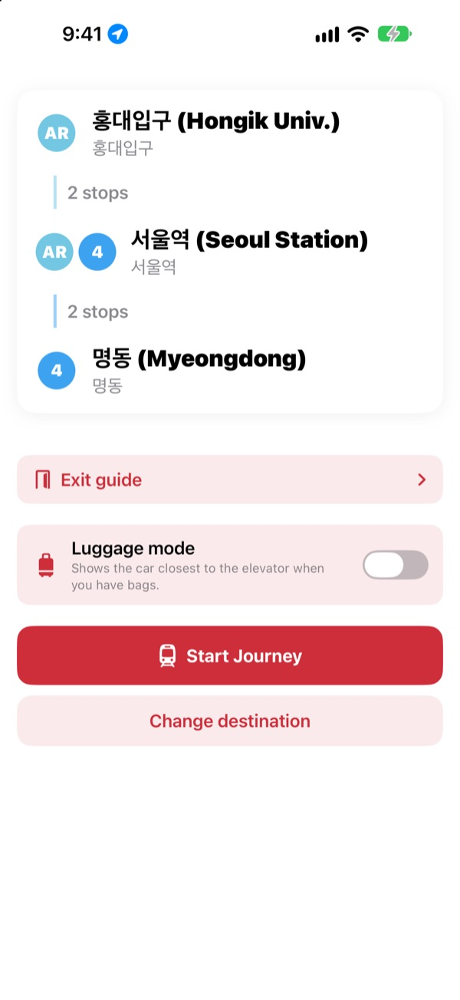
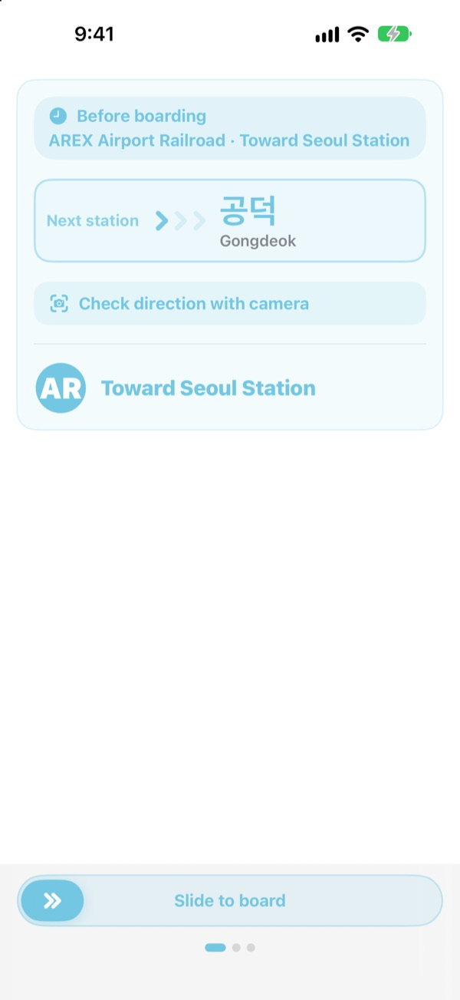
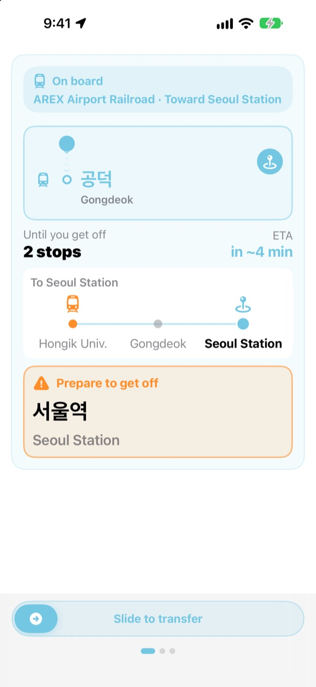
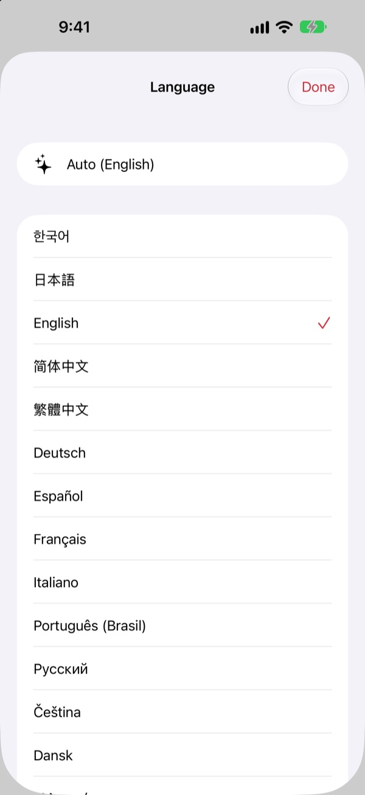

The right platform.
The right stop.
Choose your start and destination, and KORA tells you which train to board, worded exactly like the “To ○○” sign on the platform. While you ride, it follows your station and tells you when to get off.
Route search, boarding direction and live arrivals are free.

Take a test ride
You're at Hongik Univ. on the AREX line. Pick where to get off and tap Start Journey to see the boarding direction and stop alerts, just as the app shows them.
Ever stood on a platform unsure which train to take?
Map apps show you the line, but the platform only shows “To ○○” signs naming stations you've never heard of. Board the wrong way and you're backtracking several stops. Miss the announcement and you ride past your station. KORA names your train the way the sign does, and warns you before your stop.
Worded like the signs
The train to take is shown exactly as its “To ○○” sign reads on the platform and the train. Still unsure? Point your camera at the platform sign or the train's destination display and KORA tells you right away if it's the right way.
Text recognition happens entirely on your iPhone.

Never miss your stop
KORA combines live arrival data, GPS, the train's departures and stops, and the in-train announcements to know where you are. As your stop approaches you get “Prepare to get off”, then “Get off now!”, with haptics.
Your ride progress also shows on the Lock Screen and in the Dynamic Island.

23 languages, Korean names kept
Use the whole app in 23 languages. It starts in your phone's language. Station names show the Korean original next to katakana, Chinese characters or the romanized spelling printed on the signs, so you can match them on the platform.

Three steps to start
- 1
Set your start
Let GPS find the nearest station, or pick one.
- 2
Pick a destination
Transfers, stops and the train to board appear right away.
- 3
Tap Start Journey
Your screen and a buzz tell you when to get off.
What each permission is for
- Location
- Find the nearest station
- Camera
- Read platform signs and destination displays to check your direction
- Microphone and speech recognition
- Catch station names and the door side in the in-train announcements
- Motion & Fitness
- Sense departures and stops for a more accurate current station
Every permission is optional. Without them you can still pick stations yourself and get routes and stop alerts. Location, camera and announcements are processed on your device and never recorded, stored or sent.
Directions are always free. Ride guidance is KORA Pro.
Free
- Route search and transfers
- The “To ○○” sign of the train to board
- Live arrival information
- Camera direction check
- On-screen current station and stop alerts
- Every Pro feature on your first three journeys
KORA Pro
- Lock Screen guidance, announcement recognition and get-off haptics on every journey
- Exit guide: what's near each exit on Seoul Lines 1 to 8
- Last train alert for Lines 1 to 9
- Luggage mode: the car closest to the elevator on Lines 1 to 8
Pay once, keep it. Not a subscription.
When the free journeys run out, you can still ride. The on-screen progress stays; only Lock Screen guidance, announcement recognition and haptics pause.
Questions
It can't find my station, or shows the wrong one.
Go to Settings > Privacy & Security > Location Services > KORA, choose “While Using the App” and turn on “Precise Location”. GPS can be off underground or inside large buildings, so tap the current-station card at the top to pick your station yourself. Everything works without location access too.
How do I use the camera direction check?
Once your route is shown, open the camera direction check and fill the frame with the platform sign or the train's destination display (the “To ○○” sign). It works best on the Korean text. If the sign is dark, far away or at a steep angle, move closer and aim straight on. Treat the result as a helper and double-check the station signs if in doubt.
Live arrival information isn't showing.
Live arrivals come from the Seoul Open Data Plaza, need an internet connection and are mainly available in the Seoul metropolitan area. If you're offline or the line has no live data, KORA switches to a timetable-based estimate with GPS and the accelerometer and keeps guiding you. Route search works offline.
The stop alert came a little early or late.
GPS is weak underground, so the current-station estimate can lag. Allow the microphone and KORA uses the in-train announcements to correct its position. Alerts are a helper, so keep an ear on the announcements and an eye on the station signs.
How do I change the language?
KORA starts in your phone's language. Press and hold a station card on the main screen (your current station or destination) to open the language picker, then choose from 23 languages.
The Live Activity doesn't appear on my Lock Screen.
Check that Live Activities are on in Settings > Apps > KORA (on older iOS, Settings > KORA). It appears once you start ride guidance and ends if you fully close the app. The Dynamic Island only shows on iPhone models that have it.
Which cities are covered?
About 930 stations in the Seoul metropolitan area (Seoul, Gyeonggi and Incheon, including GTX-A, AREX, the Shinbundang Line and light rail), Busan, Daegu, Gwangju and Daejeon. Switch cities with the region chips at the top of the station picker.
Can I try it before my trip?
Yes. Pick the start and destination yourself and you can check routes, transfers and boarding directions from anywhere in the world.
Is KORA Pro a subscription?
No. It's a one-time purchase you keep, and it works with Family Sharing. If you reinstall the app, tap Restore Purchase on the Pro screen.
What happens to my data?
There's no account and no ads. Location, camera and announcement recognition are processed on your device and never stored or sent. We only collect anonymous usage statistics to improve the app.
Is it accessible?
KORA supports VoiceOver and larger text sizes. Suggestions to make it more accessible are always welcome.
Missing station, odd name or any question? Email mizzking75@gmail.com. Including the app version, your iPhone model and the stations you used helps us look into it faster.